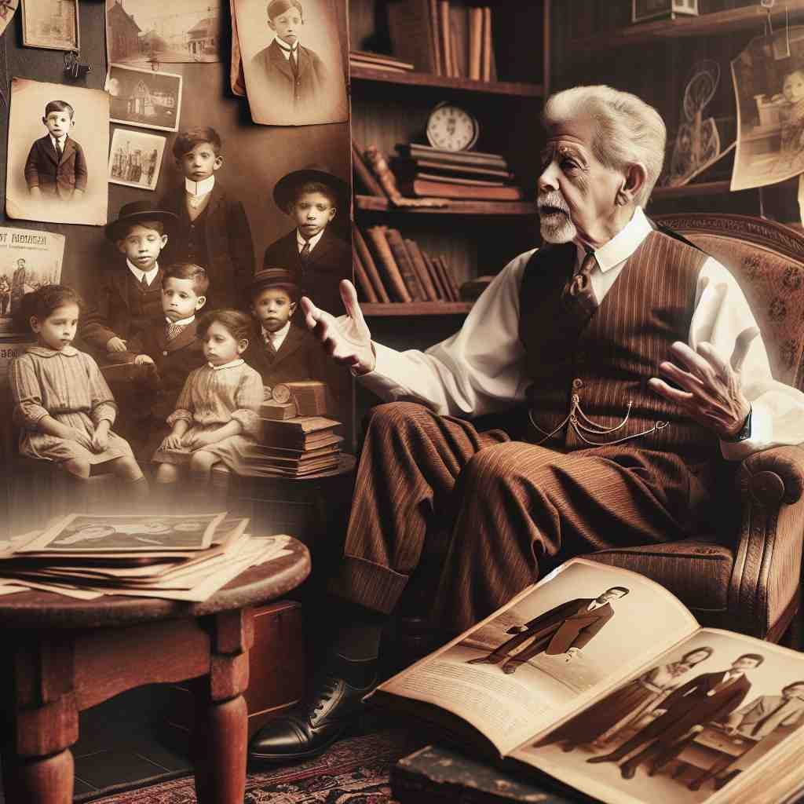
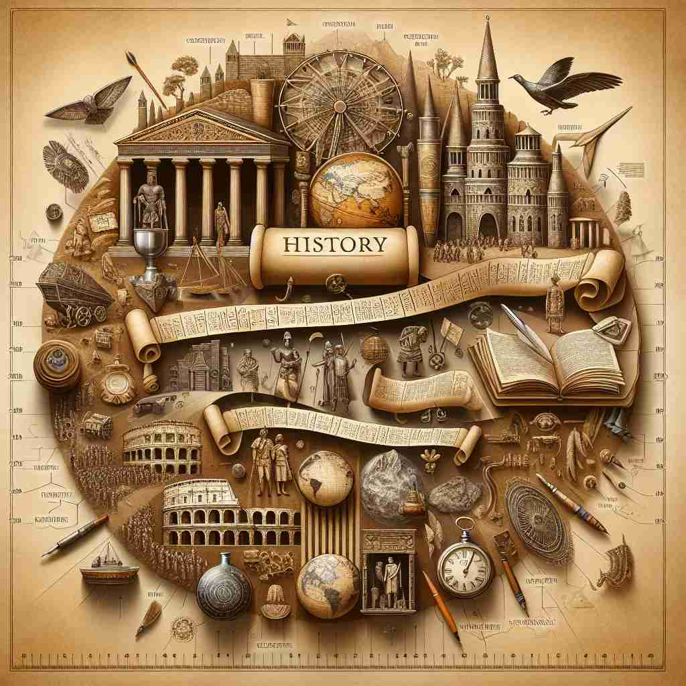

💬 The students are eager to learn about history from their teachers.

💬 They come to explore ancient history at the museum.

💬 The man loves to share family history with his grandchildren.

💬 The students are excited about the study of history.
🔈 ['hɪst(ə)rɪ]
🗝️ n. the study of past events
🖼️ 在一间安静的大学图书馆里，一群学生正围坐在一起，翻阅着关于古代文明的厚重书籍。教授正在讲解历史事件的重要性，激发学生们对古代世界的探索热情。这个场景展示了 'history' 作为对过去事件的研究。
🔍 想象'history'是一本厚厚的书，记载着过去发生的所有事情。这本书既可以是关于整个世界的，也可以只关于一个人或一件事。有时我们翻阅这本书（研究历史），有时我们在书中添加新的内容（创造历史）。无论是个人病史还是一栋建筑的来历，都可以看作是这本'历史之书'的一个章节。通过这个核心概念，你可以轻松理解和记忆'history'的各种用法。
💬 The students are eager to learn about history from their teachers.
💬 They come to explore ancient history at the museum.
💬 The man loves to share family history with his grandchildren.
💬 The students are excited about the study of history.
🌳 由词根 "historia"（希腊语，意为 '调查' 或 '故事'）演变而来，表示关于过去事件的记录或研究。
💡 可以将 "history" 联想为一连串 '故事'，记住它涉及过去（his-story）的事件，当你了解更多 '故事' 时，就在学习历史。
🗝️ n. the whole series of past events connected with a particular person or thing
🖼️ 在一位著名科学家的生日纪念会上，他的一生被逐步展开。他的朋友和家人分享着他取得成功的每一步，从早年的实验到突破性的发现，都形成了他的完整历史。这个场景展示了 'history' 作为与特定人或事物相关的整个过去事件系列。
💬 The building has a long and interesting history.
❓ 从"研究过去事件"扩展到"过去事件的整体
🗝️ n. a record or account of past events
🖼️ 在一个古老的档案馆里，历史学家小心翼翼地翻阅一卷卷泛黄的手稿。这些手稿记录了一个消失已久的王国的兴衰，为后人提供了宝贵的历史信息。这个场景展示了 'history' 作为记录或记载过去事件的含义。
💬 He wrote a history of the French Revolution.
❓ 从"研究过去事件"到"记录过去事件
🗝️ n. the past considered as a whole
🖼️ 在一个人类文明展览馆里，参观者被古代文物和现代科技的发展历程所震撼。导游介绍着人类从原始社会到现代社会的演变，以全景视角展示了历史的整体图景。这个场景展示了 'history' 作为整体过去的含义。
💬 This discovery will go down in history.
❓ 从"研究过去事件"泛化为"整个过去
🗝️ n. a continuous record of past events or trends
🖼️ 在气象站里，工作人员正分析着几十年来的气候数据，寻找全球变暖的趋势恒量。电脑屏幕上显示着一条条历史性的数据曲线，这些都是气候变化的连续记录。这个场景展示了 'history' 作为持续记录过去事件或趋势的含义。
💬 The patient has a history of heart problems.
❓ 从"研究过去事件"延伸为"持续的事件记录
🗝️ n. an eventful past
🖼️ 在家庭聚会上，一位年长者坐在壁炉旁，孩子们围绕在他的身边。他讲述着自己过去丰富多彩的人生故事，那些充满冒险和激情的经历绘声绘色地展现在眼前。这个场景展示了 'history' 作为多事之秋的过往的含义。
💬 That old house has quite a history.
❓ 从"研究过去事件"引申为"值得记录的过去